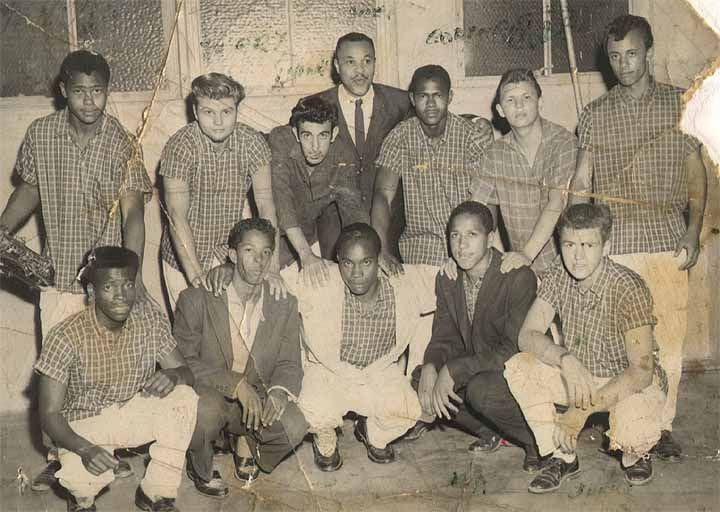
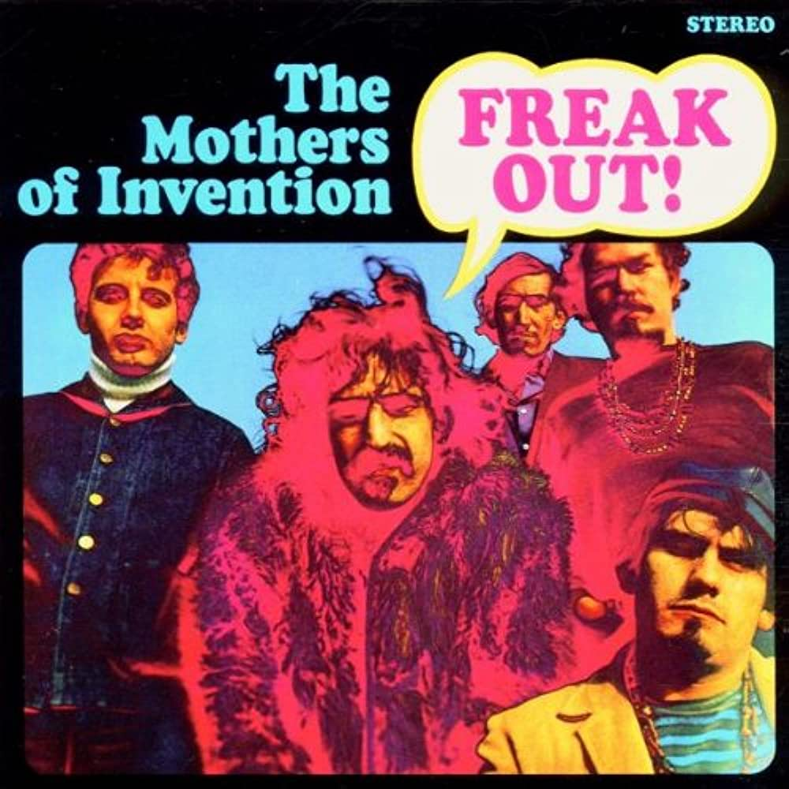
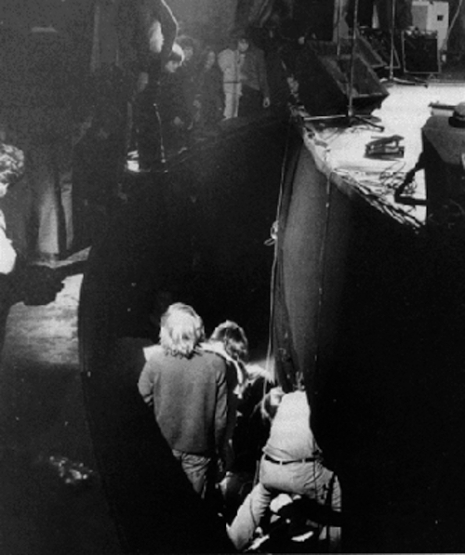
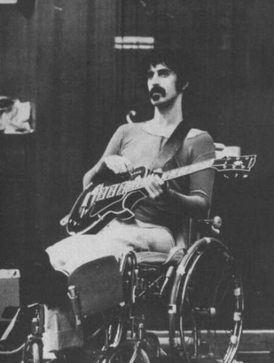
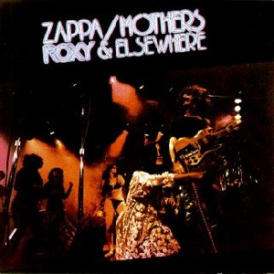
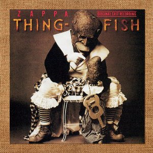
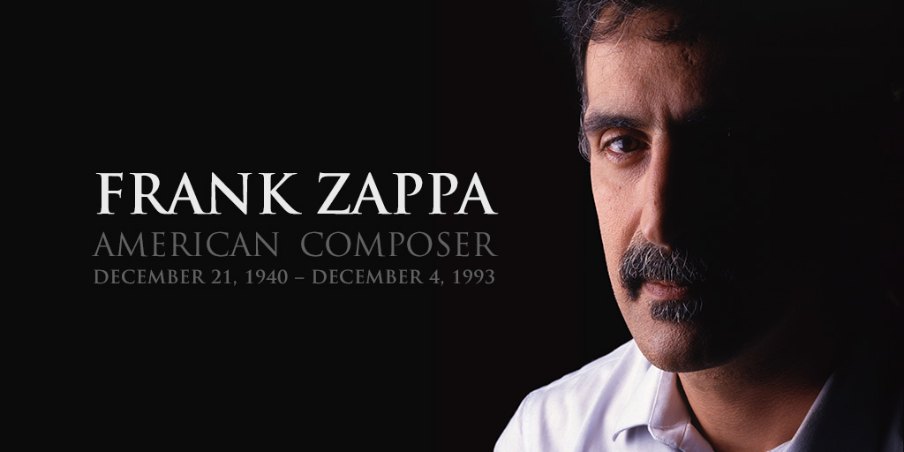

1940
Frank Zappa born Francis Vincent Zappa is born in Baltimore

Frank Zappa born Francis Vincent Zappa is born in Baltimore
Zappa's parents move to California
Zappa plays the drums for his high school band, The Blackouts
Starts writing teen novelty songs with friends
Zappa plays the bicycle wheel in tribute to Edgard Varese live on national television for the Steve Allen Show.
Zappa opens "Studio Z" where he is arrested by police for creating "pornographic audio recordings"
Zappa's band changes their name to "The Mothers" on mothers day 1965. THey begin to play original material and Frank moves to Los Angeles where he connects with the local freak scene.
The Mothers release their first album Freak Out. The record company changes their name to "The Mothers of Invention" due to duplicate band names.
Zappa works on more solo albums as albums release under The Mothers
A fire during a concert destroys all Mothers equipment. An angry fan pushes Zappa off the stage 12 feet into the orchestra pit. He broke his leg and crushed his larynx. This changes Zappa's singing range and immobilizes him for the next 10 months.
 Zappa and The Mothers release Just Another Band From L.A., Hot Rats, Waka Jawaka, The Grand Wazoo
The Mothers release Over Night Sensation
The Mothers release Roxy and Elsewhere and Zappa releases Apostrophe
The Mothers release One Size Fits All, Bongo Fury, and Joe's Menage
Zappa in New York, Studio Tan, and Halloween released
Steve Vai joins Zappa's band
The longest ever Zappa European tour ends in Palermo with a big riot.
Release of Thing-Fish and Francesco Zappa
Due to FZ disappointment with some fights between the musicians, Zappa fired the whole band and canceled all the shows of the second part of the North American tour.
Zappa is diagnosed with prostate cancer
Release of The Best Band You Never Heard In Your Life, Make A Jazz Noise Here, You Can't Do That On Stage Anymore Vol. 4
Release of You Can't Do That On Stage Anymore Vol. 5, You Can't Do That On Stage Anymore Vol. 6, Ensemble Modern perform The Yellow Shark, Playground Psychotics
Release of Ahead Of Their Time, The Yellow Shark. Frank Zappa passes away from cancer on December 4th
